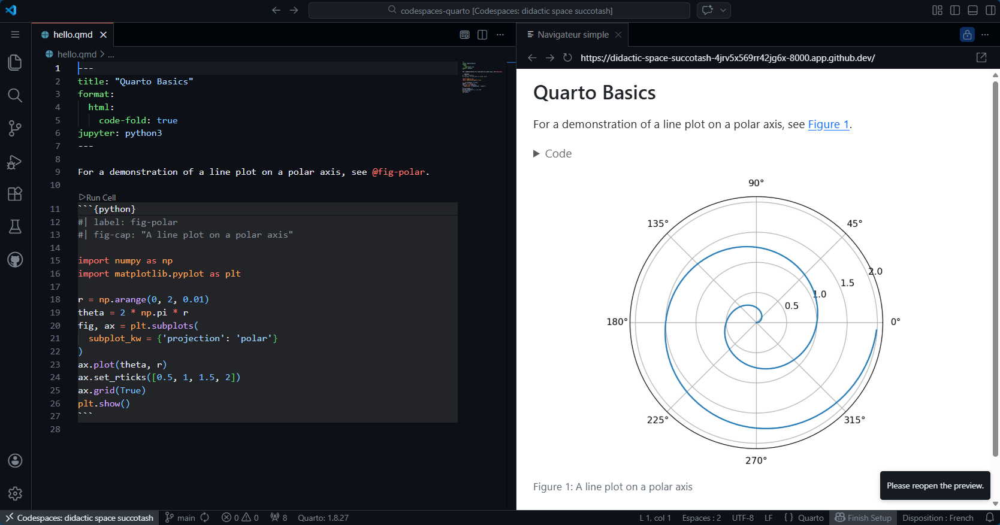

GitHub Codespaces + Quarto
Setting up a working environment can be cumbersome and time-consuming. To speed up this process and avoid wasting time debugging local configurations, you can use GitHub Codespaces. In this post I walk through a template repository I built to get a fully working Quarto environment — editor, extensions, Python, and live preview — running in the cloud in under two minutes.
The problem with local setup
Every time you start a new project, you go through the same ritual: install the right version of Python, find the right extension for your editor, configure the environment, and debug why it doesn’t work on your machine. With Quarto, this often means installing the CLI, setting up Jupyter, adding VS Code extensions, and getting the preview server running — before writing a single line.
GitHub Codespaces solves this by moving the entire development environment into the cloud. You define the environment once as code, and anyone (including future you) can launch a fully configured workspace from a browser in seconds.
Each codespace runs in a Docker container on a GitHub-managed virtual machine. Every personal GitHub account includes 120 core hours of free compute time and 15 GB of storage per month — more than enough for writing and publishing. (With the 4-core machine this template requests, that works out to 30 hours of usage per month.)
The template
I built a ready-to-use template repository that bundles everything you need to write and publish Quarto documents without installing anything locally. Click the button below to launch it instantly:

When the codespace starts, you get:
- The Quarto CLI (latest), ready to render
.qmdfiles - Python with
jupyter,matplotlib, andplotlypre-installed - VS Code for the web with the Quarto, Python, and Jupyter extensions
- A live preview of
hello.qmdthat opens automatically in the side panel
All of this is driven by a single configuration file: .devcontainer/devcontainer.json.
Walking through devcontainer.json
The .devcontainer/devcontainer.json file is the heart of any Codespaces setup. It tells GitHub exactly what container image to use, what tools to install, and how to configure the editor. Scroll through the story below to see how each piece of this file works.
Using the template
The quickest way to get started is to click the badge above. Alternatively, you can use it to seed your own repository:
- Go to github.com/guillaumegilles/codespaces-quarto
- Click “Use this template” → “Create a new repository”
- Open your new repo and click “Code” → “Codespaces” → “Create codespace on main”
Within about 90 seconds the container will be built, Python packages installed, and a live Quarto preview will open in your browser — ready to write.
Going further
Once you’re comfortable with the template, you can extend it by editing .devcontainer/devcontainer.json:
- Add R support by including the
ghcr.io/rocker-org/devcontainer-features/r-rig:1feature - Add more Python packages by editing
requirements.txt - Pre-install more VS Code extensions by adding their IDs to the
extensionslist - Change the base image to the universal image if you need a wider set of pre-installed runtimes
The configuration-as-code approach means any change you commit is instantly available to anyone who opens the repository in a codespace.
What to expect
Here is what the codespace looks like once it has finished loading: VS Code on the left with hello.qmd open, and the live Quarto preview rendering a polar plot on the right — no local setup required.

hello.qmd open and its Quarto preview side by side.